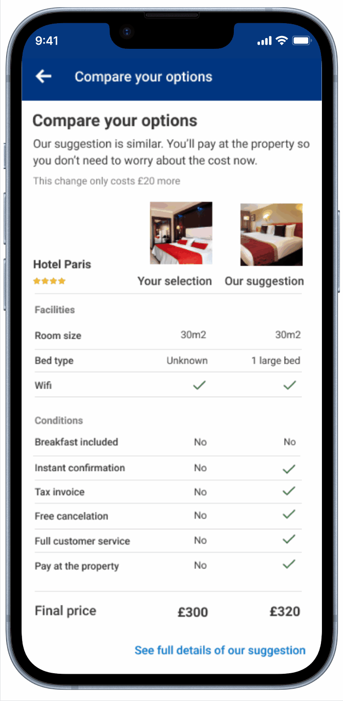

© Designed & coded by Guilherme Cerqueira - 2025
Smart Upselling After Payment Failure
Turning a pain point into a conversion opportunity at Booking.com
TL;DR:
What
Redesigned the post-payment failure experience on Booking.com to upsell regular inventory rooms when third-party (TPI) bookings failed.
Why
TPI rooms were cheaper and increased conversions upfront, but frequent payment failures led to high drop-off rates (30–50%) and user frustration.
How
Introduced a fallback flow that offered users a similar room with a "Pay at Property" option. Designed and iterated multiple comparison UI patterns, tested with users, and optimized for clarity and trust.
Challenges
Users were confused by early designs, overwhelmed by information, and skeptical about whether the suggested rooms were from the same hotel.
Impact
Nearly 50% of users who experienced a payment failure selected the upsell offer. The solution launched with positive Net Conversion and reduced bounce rates across platforms.
Overview
While leading design initiatives, I identified a critical drop-off point: users booking rooms from TPI were abandoning the site after failed payments. These rooms often carried multiple restrictions—non-refundable, advance payment only, limited support—and payments frequently failed.
This moment of frustration became an opportunity: what if we upsold regular inventory rooms with more flexible conditions, like “Pay at the property,” right after a failed TPI payment?
Context
Booking.com offered third-party inventory (TPI) rooms from providers like Agoda and other OTAs because they were significantly cheaper. These rooms increased conversion by showing lower prices on the site, which attracted users — even though they came with serious trade-offs.
Cheaper Prices, Higher Conversion
Displaying lower-priced TPI rooms boosted user interest and improved overall conversion rates. The pricing advantage made users more likely to continue through the booking funnel.
Clear Trade-Offs Communicated
Booking.com was transparent about the limitations of these cheaper rooms — trade-offs were shown clearly before purchase to maintain trust.
Advance payment required
Users had to pay upfront, removing flexibility and increasing perceived risk.
Non-refundable
No refunds or cancellations allowed, which led to booking hesitation.
No invoices
No invoice issued, making it unsuitable for business or reimbursable travel.
Limited payment options
Restricted payment methods often led to failed transactions and user drop-off.
Lack of full customer support
Booking.com couldn’t fully support these bookings, as they were owned and managed by third-party providers.
Problem
Failed payments were a common issue with TPI rooms due to limited payment methods, technical errors, or insufficient funds. When a payment failed, the experience abruptly ended with little recourse or guidance.
Research and analytics revealed that 18–33% of users who encountered a payment failure dropped off entirely—either abandoning the platform or restarting their search from scratch. This presented a clear opportunity to reduce friction and recover potential bookings.
Opportunity
Rather than letting failed payments mark the end of the journey, I saw an opportunity to offer users a fallback: a similar room from Booking.com’s regular inventory with a more flexible "Pay at Property" option. This option aligned better with user expectations and trust, especially after a frustrating failed transaction.
Old flow
New proposed flow
Design thinking and strategy
Jobs To Be Done (JTBD):
“When my payment fails, I want a clear and trustworthy alternative so I don’t have to start over and risk losing my booking.”
This insight guided the upsell concept — solving the real job of avoiding hassle and preserving booking momentum.
How Might We (HMW):
- How might we turn a payment failure into a positive experience?
- How might we offer more flexible options without breaking user flow?
- How might we reduce cognitive load during a high-frustration moment?
Design methods:
Lean UX
Rapid, research-backed iteration cycles with prototypes tested via usertesting.com. Every design change was validated or discarded based on real user feedback.User-Centered Design:
Design decisions were grounded in the emotional state of users post-failure — prioritizing empathy, clarity, and confidence-building.Cross-functional Collaboration:
Worked closely with PMs, developers, and copywriters to ensure that UX, UI, and microcopy aligned seamlessly with backend constraints and business goals.
Design iterations - Mobile
Instead of a shallow message, user has the option to see other option for their booking. Also, I added a upselling component to the last step if the user wants to try the payment again.
First prototype: Overloaded and Confusing Layout
Introduced a comparison screen highlighting differences in green/red. However, users found it overwhelming and hard to interpret. Many didn’t realize it was a comparison or that the rooms came from the same hotel.
Iteration 2: Reduced Noise, Focused Content
Removed the color cues, streamlined font hierarchy, and clarified layout. This helped reduce confusion, but the amount of information still overloaded users who were already frustrated by a failed transaction.Third Version – Focused Differences
This version prioritized only essential differences: bed type, room size, and flexible policies. Copy was shortened, and the comparison was more visually digestible. Feedback improved, but users still asked whether both rooms were from the same hotel and requested images. Copy was tightened for speed and clarity.Final Version – Condensed Comparison Table
Users testing the third version still raised two major concerns: they couldn’t tell if the rooms were from the same hotel, and they wanted to see images. Additionally, the original error-focused title (“Your payment didn’t work”) triggered disappointment and made users less likely to engage. We reframed the message with a more positive, action-oriented tone, added hotel names to both options, and included photos for clarity and reassurance. The final layout used a compact visual table to present differences clearly, with a link to “See full details of our suggestion” for deeper exploration—striking a balance between clarity and control.

Design iterations - Desktop
The upselling component on the last step of booking process, after payment fails
Iteration 1: Split Columns with Highlighted Differences
The first version used two side-by-side columns with green highlights to show differences between the selected and suggested rooms. However, this layout required users to scan back and forth, making comparisons cognitively demanding. Despite displaying the hotel name and address, users still weren’t confident the rooms were from the same property—likely due to poor positioning. Large images were intended to add visual appeal but proved risky if the suggested room lacked attractive photos.Iteration 2: Unified Layout with Visual Cues
In the second iteration, we replaced the split view with a single unified container. The hotel name was positioned prominently at the top, immediately signaling that both rooms were from the same place. We removed the heavy green highlights and instead used checkmarks to indicate added benefits. This version improved clarity and was better understood, but lacked clear hierarchy, and aligning content introduced excessive whitespace that hurt visual balance.Final Design: Structured Table with Inline Interactions
The final version borrowed structural patterns from our app design. A left-aligned label layout with horizontal dividers made scanning and comparison much easier. Users appreciated the clear "conditions" section and the ability to preview the suggested room via image click, which opened a detail pop-up without leaving the screen. Primary actions—“Book our suggestion” and “Try another payment method”—were streamlined to reduce friction. The user could complete their booking without re-entering any information, keeping the flow fast and frustration-free.Results
High Recovery Rate After Payment Failure
Nearly 50% of users who experienced payment failure chose the upsell roomSuccessful Launch with Positive Net Conversion
Positive Net Conversion observed in the first live release across platformsReduced Frustration and Lower Bounce Rates
User frustration was significantly reduced, and bounce rates post-failure dropped noticeablyEfficient Cross-Platform Scalability
The solution scaled across both mobile and desktop with minimal engineering overhead
Key takeaways
Turning Failure into Opportunity Through Empathy
Moments of failure can be reframed into opportunities when the user’s needs are addressed with empathy and claritySimplicity Matters Most After Errors
Simplicity and focus in UI are crucial, especially after error statesContextual Flexibility Reduces Drop-Off
Users were more likely to continue after a failed payment when presented with context-sensitive alternatives—like switching payment methods or booking a refundable room—rather than static fallback options.Progressive Disclosure Boosts Decision Confidence
Surfacing key info—like cancellation policy or total cost—only when relevant helped reduce cognitive load and prevent premature exits from the flow.
Final thoughts
This project transformed a moment of frustration into a revenue-generating opportunity. By introducing a clear, trustworthy upsell flow after payment failures, we significantly improved user retention and experience. The solution led to a bump in conversion rate on the suggested rooms and delivered a positive Net Conversion uplift across platforms. It not only enhanced the booking experience but also unlocked meaningful revenue from previously lost transactions — proving that good UX drives business impact.